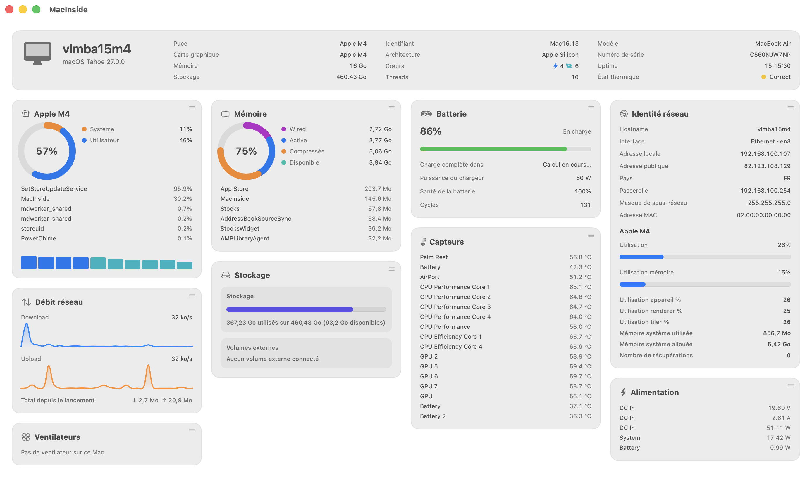

CPU load, real sensor temperatures, fan RPM, GPU utilization, battery health, network throughput — one native dashboard, from the Dock to the menu bar.
Why
MacInside talks straight to host_statistics, IOKit's AppleSMC, IOAccelerator and libproc — the same low-level APIs tools like iStat Menus and Stats use. No shelling out to top or iostat, no background daemon, no phoning home.
Every reading lands in a single masonry dashboard window, and in a menu bar you shape yourself — one combined dropdown, or six independent icons, each with its own detail view.
What it reads
host_processor_info
System vs. user load, per-core performance/efficiency bars, and the process actually spending your cycles.
vm_statistics64
Wired, active, compressed, available — plus the top memory consumer, updated every second.
FileManager / statfs
System volume and every external volume, used and free, at a glance.
getifaddrs
Local and public IP, gateway, subnet, MAC address, and live download/upload sparklines.
IOKit · AppleSMC
Real SMC temperature & fan readings — Intel and Apple Silicon — with an honest "no fan on this Mac" for fanless models.
IOKit · AppleSMC
Voltage, current and wattage on DC In, system and battery rails, where the hardware exposes them.
IOAccelerator
Device, renderer and tiler utilization straight from IOAccelerator — no Console.app required.
IOPowerSources
Charge, time remaining, health and cycle count — hidden automatically if your Mac doesn't have one.
The dashboard
A masonry layout that adapts to your window width — drag any card to reorder it, the layout is remembered next time you launch.

Under the hood